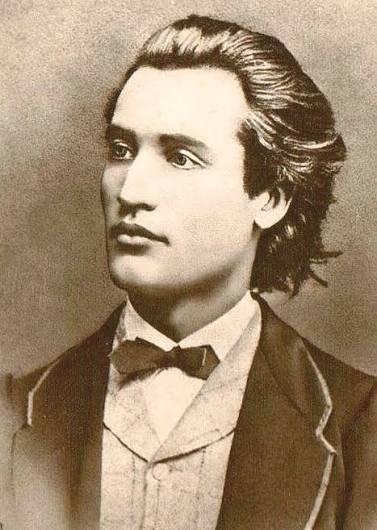
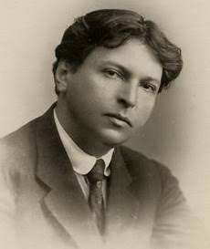
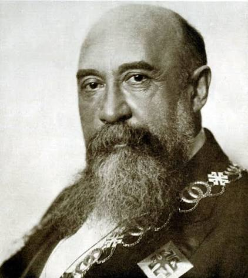
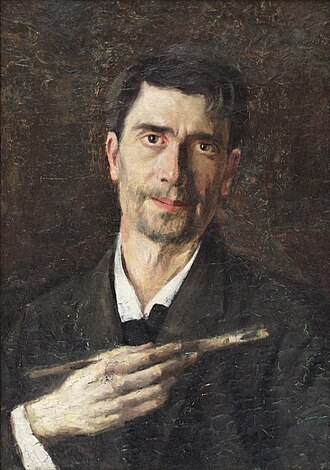
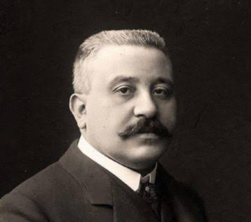

Personalități din Botoșani
Botoșani este renumit pentru faptul că este locul de naștere al multor figuri culturale, savanți și artiști români de renume mondial.
Contribuții Majore la Cultura Românească
Județul Botoșani a dăruit României și lumii minți strălucite care au definit literatura, muzica, istoria, arta și știința:
- Geniul poeziei naționale: Poezia lui Mihai Eminescu reprezintă piatra de temelie a liricii universale.
- Patrimoniul muzical: George Enescu a pus muzica românească pe harta mondială prin creații simfonice monumentale.
- Școala istorică și științifică: Personalități precum Nicolae Iorga și Grigore Antipa au fondat instituții de referință.
- Sensibilitatea artistică: Arta vizuală a fost revoluționată prin perspectivele maestrului Ștefan Luchian.
Galeria Personalităților

Mihai Eminescu
Vârsta: 39 aniConsiderat cel mai faimos și influent poet român din toate timpurile, simbol al literaturii naționale.

George Enescu
Vârsta: 73 aniCompozitor, violonist, pianist, dirijor și profesor de talie internațională.

Nicolae Iorga
Vârsta: 69 aniIstoric, critic literar, dramaturg, poet și om politic de o erudiție covârșitoare.

Ștefan Luchian
Vârsta: 48 aniPictor celebru, cunoscut pentru peisajele, portretele și naturile statice pline de expresivitate.

Grigore Antipa
Vârsta: 76 aniBiolog darwinist și oceanolog care a reorganizat muzeul de istorie naturală din București.